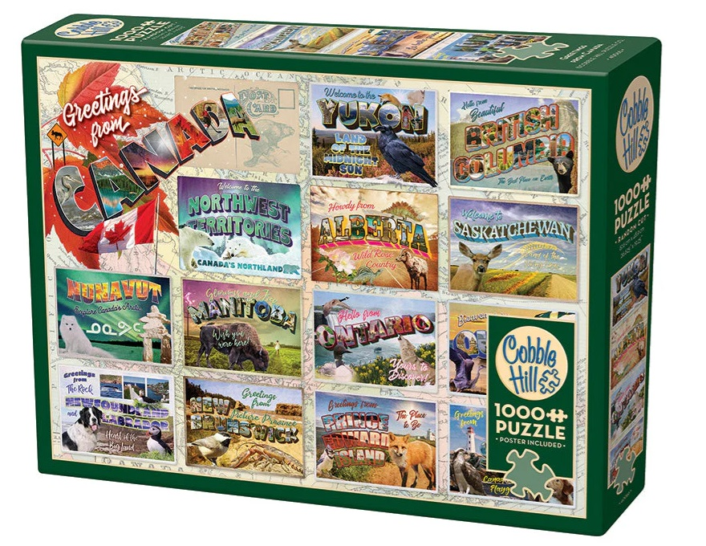

About our company

Cobble Hill was founded in 2005 with a desire to bring quality puzzles manufactured in North America that inspire a loving, whimsical, nostalgic feeling to jigsaw puzzle enthusiasts, and novices.
The company's signature feature has always been its random cut die and quirky piece shapes. It's also recognizable by its linen print texture not only on the puzzle, but on the box as well. Made with high quality blue board using recyclable materials, the puzzles have always been made with the environment in mind.